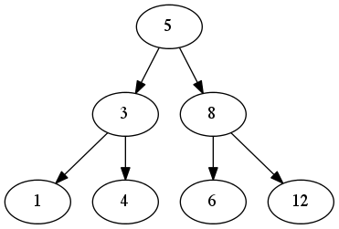

A tree is a basic and widely used data structure, there is multiple types of trees. I will only focus on binary trees here.
A tree consists of elements called Nodes organized in hierarchical arrangement. The node at the top of the hierarchy is called the Root. The nodes directly below the root are the children, which in turn have children of their own. Therefor nodes can also have Siblings, Descendants and Ancestors. The siblings of a node are the other children of its parents. The descendants are all the nodes branching out below a node and the ancestors are the nodes between a node and the root.

With the exception of the root, each node has exactly one parent which is the node exactly above it. In a binary tree each parent can only have 2 children, the number of children a node can have is called the Branching Factor. This number dictates how fast a tree will branch out as nodes are inserted. The performance associated with a tree is often discussed in terms of its Height which is the number of level in which nodes reside.
In a binary tree, each node contains three parts, a data member, a left pointer, and a right pointer. This structure allows to build the tree using the left and right pointers to point at a node's children. If a pointer points to NULL that mean it do not have a children and that is the end of the branch. A Branch is a series of nodes beginning at the root and ending at a Leaf Node. Leaf nodes are the nodes along the fringe of the tree that have no children.
typedef struct _bi_tree_node{ void * data; struct _bi_tree_node * left; struct _bi_tree_node * right; }bi_tree_node;
Traversing a binary tree means visiting his nodes one at the time in a specific order. There is multiple way to proceed but traversing a tree is particularly simple if we think of a tree as being recursively composed of smaller sub-trees.
Visit a tree in a Pre-order fashion means visiting its root node, then traverse the left sub-tree of its root in a pre-order fashion followed by the right sub-tree of its root in a pre-order fashion. It is a depth first exploration of the tree.
To visit a tree in an In-order fashion, first, traverse the left sub-tree of its root in an in-order fashion, then visit the root itself and then visit the right sub-tree in an in-order fashion.
To visit a tree in a Post-order fashion, traverse the left subtree of it's root node in post-order, then the right subtree and then the root node.
To traverse a binary tree in a level-order fashion, visit its nodes beginning at the root and proceed downward, visiting the nodes at each level from left to right. The level-order traversal is a breadth-first exploration.
Balancing a tree is the process of keeping it as short as possible for a given number of nodes. This means making sure of that one level is completely full before allowing a node to exist at the next level. So a tree is balanced if all the leaf nodes are at the same level or, if all the leaf nodes are in the last two levels and the second to last level is full. A tree is left-balanced if all the leaves occupy only the leftmost positions in the last level.
Basic operation for manipulating binary trees. This API for the binary tree is a good start to understand what kind of operations are possibile. Next time I will extend this API with an full implementation.
void bi_tree_init(bi_tree * tree, void (*destroy)(void * data));
Initialize the tree specified by tree. Must be the first operation on the tree before it can be used (duh!). The destroy argument gives a way to free dynamically the allocated data when needed.
void bi_tree_destroy(bi_tree * tree);
Destroys the tree specified by tree using the destroy function passed during the init
int bi_tree_insert_L(bi_tree * tree, bi_tree_node * node, const void *data); int bi_tree_insert_R(bi_tree * tree, bi_tree_node * node, const void *data);
This two functions insert a child of the given node either on the left or on the right. This fuction returns 0 if succesful or -1 otherwise. When successful, the new node contains a pointer to data, so the memory should be valid as long as the node remains.
void bi_tree_remove_L(bi_tree * tree, bi_tree_node * node); void bi_tree_remove_R(bi_tree * tree, bi_tree_node * node);
Removes the sub-tree rooted either at the left or the right of the given node from the specified tree. If node is NULL all nodes in the tree are removed. This function uses the destroy function passed during the init.
int bi_tree_merge(bi_tree * merge, bi_tree * left, bi_tree * right, const void * data);
This function merges two binary trees specified by left and right into the tree specified by merge. If the merge is successful the function returns 0 , -1 otherwise. Once they are merged, both the left and right trees are destroyed.
int bi_tree_size(bi_tree * tree);
This function returns the size of the given tree.
bi_tree_node * bi_tree_root(const bi_tree * tree);
Returns a pointer to the node at the top of tree.
int bi_tree_eob(const bi_tree_node * node);
Determines if the specified node is the end of the tree. returns 1 if true, 0 otherwise.
int bi_tree_is_leaf(const bi_tree_node * node);
This function returns 1 if the node is a leaf or 0 if not.
void * bi_tree_data(const bi_tree_node * node);
This function returns a pointer to the data stored in the node.
bi_tree_node * bi_tree_left(const bi_tree_node * node); bi_tree_node * bi_tree_right(const bi_tree_node * node);
This functions return pointers to the respectively the left and right childs of the specified node.
The Full code of this Binary tree can be found on Github